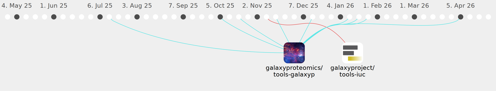

reid-wagner

Commits all-time: 96
Commits last year: 68

(68)
- ef0f93e
- 97718b1
- 50e9798
- 749b351
- 18d626f
- 5c2189e
- 51e7432
- 46bb7c1
- 2964cd9
- e82739e
- d62e6c8
- 2995038
- 3031e8f
- 93a0352
- b8c1870
- 59d8f7f
- f154c6b
- f3870b0
- fd36cd4
- 5732dfa
- 68fb04a
- 7716996
- 8ad5ef8
- 7d08abc
- c6767b9
- 9569b8d
- abe2e28
- 65df042
- f98d62a
- 55c4f70
- 1a95a56
- 0efda10
- 65ffdb2
- fb040ed
- 2c8b0e1
- 9d39462
- 85137dc
- 44a627b
- a3b81b2
- 67fa61c
- 2485706
- ba90bef
- 8c78dd6
- 1f1a65c
- 38962f5
- c72c173
- 93389ad
- b4b31b8
- e196063
- a3f600b
- abde55b
- cdb8815
- 3d53568
- 473bb22
- c1149af
- 34c0cd0
- bb0619c
- 933ea92
- 8112075
- 818ef35
- e01bab8
- 11097ef
- a4e7ce7
- 3c696cd
- b54dee1
- ef303d3
- 3fe4caf
- 2f9f554